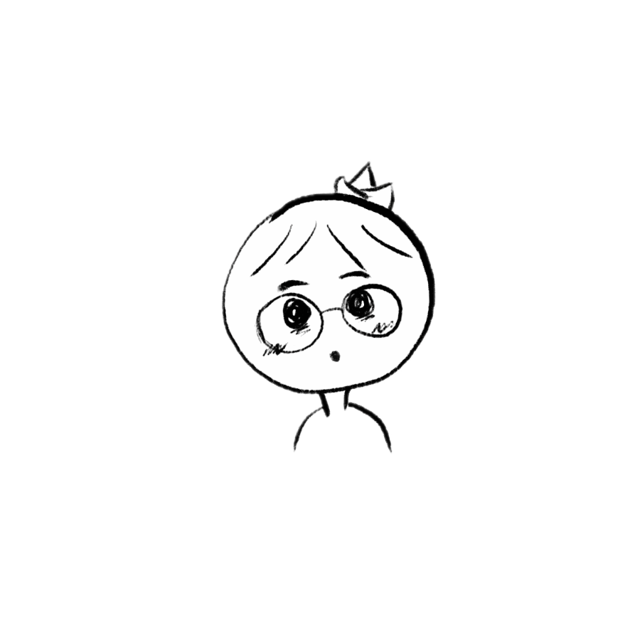

En parallèle de mes études et de mon parcours dans le domaine de l’informatique, je pratique une autre de mes passions : la photographie. J’ai développé un réel attrait pour l’audiovisuel, avec l’envie de capturer des émotions dans le temps et, surtout, de figer l’instant présent. Que ce soit lors d’événements tels que des salons, pendant mes voyages ou simplement par beau temps, il m’arrive de sortir avec mon X-T5 en main afin d’explorer avec attention l’univers qui m’entoure.
Timéo
Web Developer
En apprentissage
Recherche d'un stage de 10 / 12 semaines minimum en entreprise numérique / informatique pour le mois d'avril 2026.
CV format PDF
